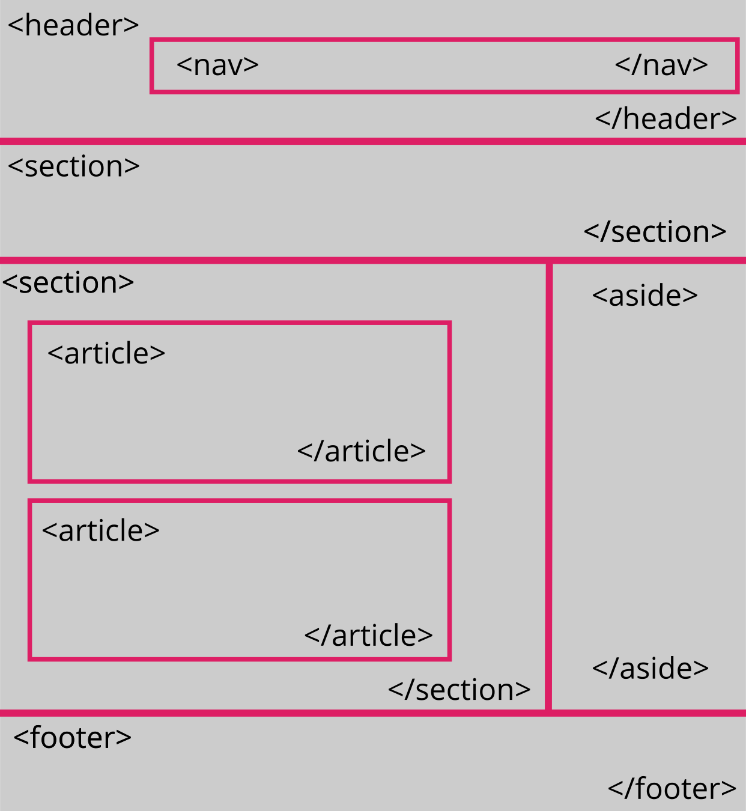
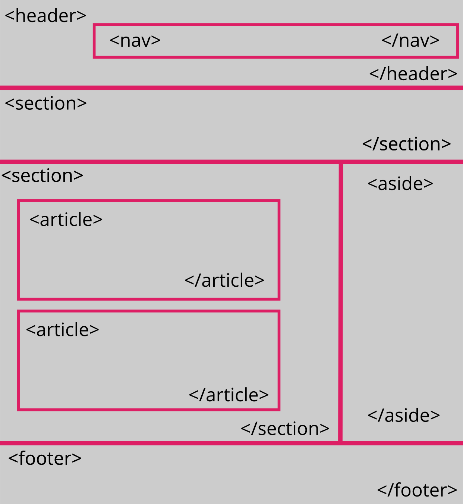
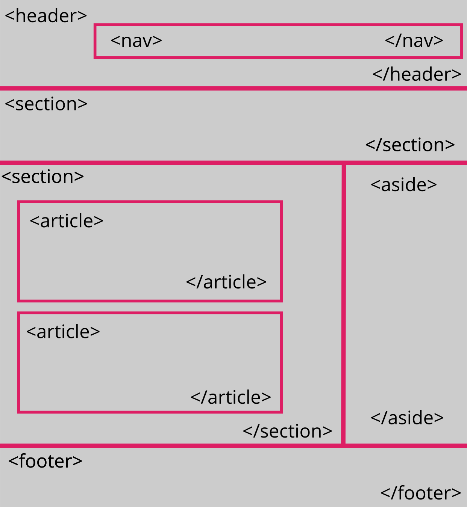

Diseñar un objeto virtual de aprendizale OVA del tema Contenido en HTML, incluyendo los elementos básicos para su elaboración, tales como la section, aside, footer y article, haciendo uso de etiquetas en el editor de su preferencia.
El material que se usará para la creación de los contenidos de la sección son textos, imágenes y vídeos, que brindan información acerca de la temática que se aborda en el presente documento. Véase acontinuación:

Bienvenid@ al objeto virtual de información, en el encontrarás toda la información relacionada con el contenido de HTML y sus etiquetas
básicas para la creación de páginas web. Todo esto apoyado de muchas herramientas como Visual Studio, Git y GitHub. Esta OVI seguramente te ayudará en tu aprendizaje como
programador. ¡Éxitos!
"La imaginación es más importante que el conocimiento" -Albert Einstein
"Una persona que nunca ha cometido un error nunca intenta nada nuevo" -Albert Einstein
La estructura de una página en Html está compuesta por una serie de elementos que son indispensables en el momento de su elaboración, a continuación se muestran estos elementos:
- Section:
- Aside:
- Footer:
- Article:
En fin los elementos article, section, aside son considerados semánticos, pues le dan significado al contenido que engloban y utilizarlos
correctamente es muy importante, como por ejemplo, para que los motores de búsqueda entiendan, muestren correctamente, en las mejores posiciones o en fin para el seo,
optimización y mantenimiento.